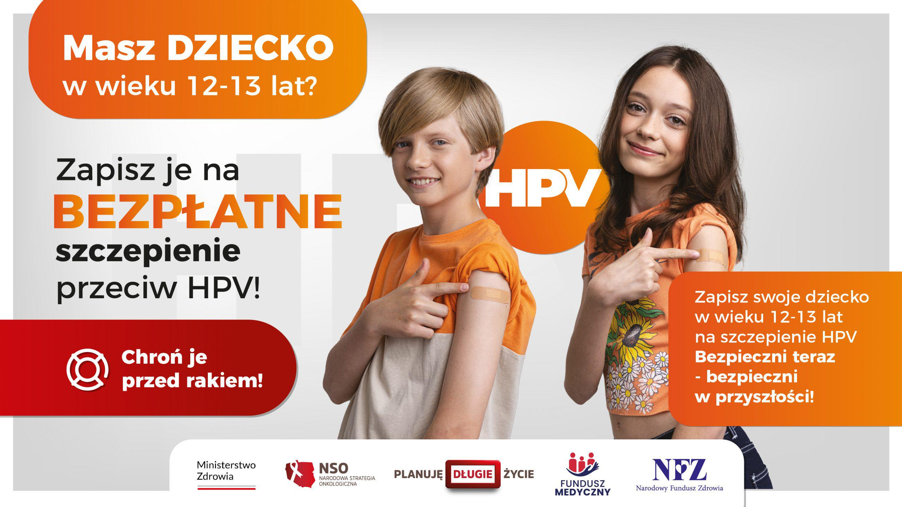

-
Poradnie specjalistycznePoradnie
Poradnia Podstawowej Opieki Zdrowotnej Poradnia Alergologiczna Poradnia Angiologiczna Poradnia Chirurgiczna Poradnia Dermatologiczna Poradnia Endokrynologiczna Poradnia Gastrologiczna Poradnia Geriatryczna Poradnia Ginekologiczna Poradnia Internistyczna Poradnia Kardiologiczna Poradnia Laryngologiczna Poradnia Medycyny Pracy Poradnia Nefrologiczna Poradnia Neurologiczna Poradnia Ortopedyczna Poradnia Pediatryczna Poradnia Proktologiczna Poradnia Reumatologiczna Poradnia Urologiczna Poradnia Zdrowia Psychicznego Gabinet Psychoterapii i Pomocy Psychologicznej Dzieci i Dorosłych Gabinet Zdrowego Żywienia Badania Laboratoryjne Opieka Pielęgniarska Pracownia USG
- Aktualności
- Placówki
- Informacje
- Kontakt

Witaj na stronie
FAM-MED
Zadzwoń i umów się na wizytę

News
News
News